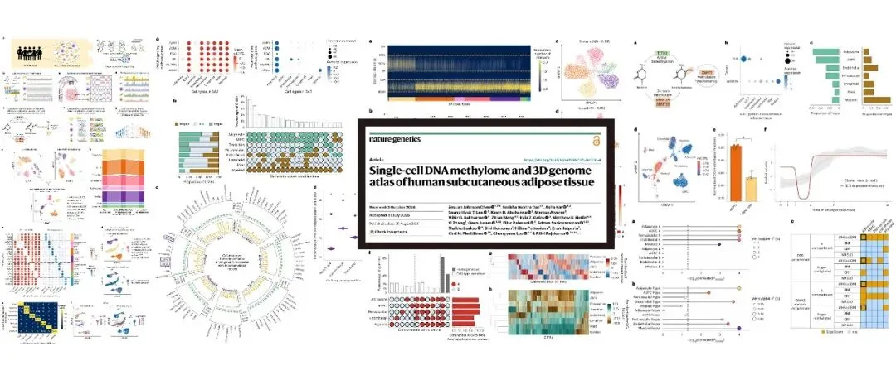
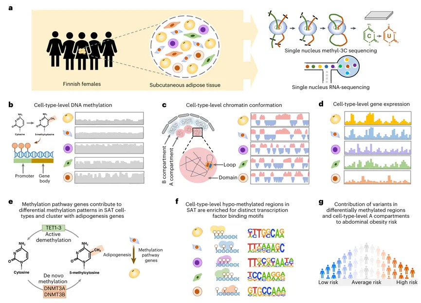
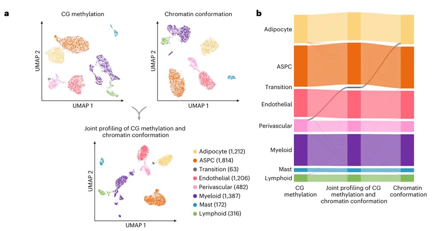
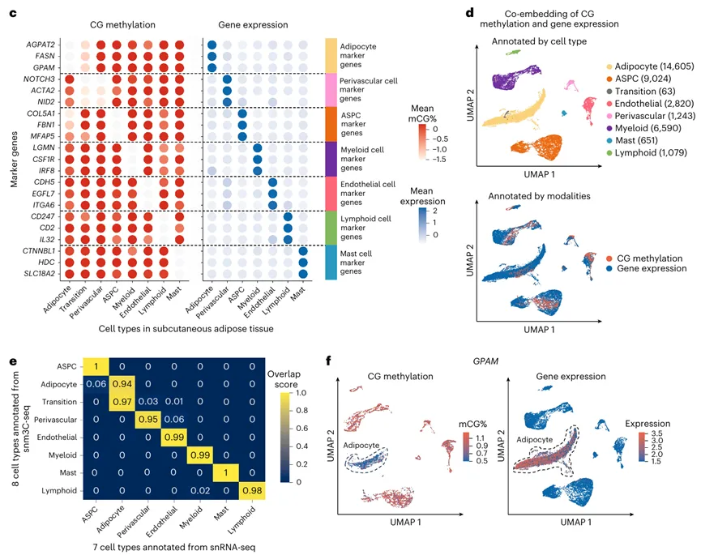
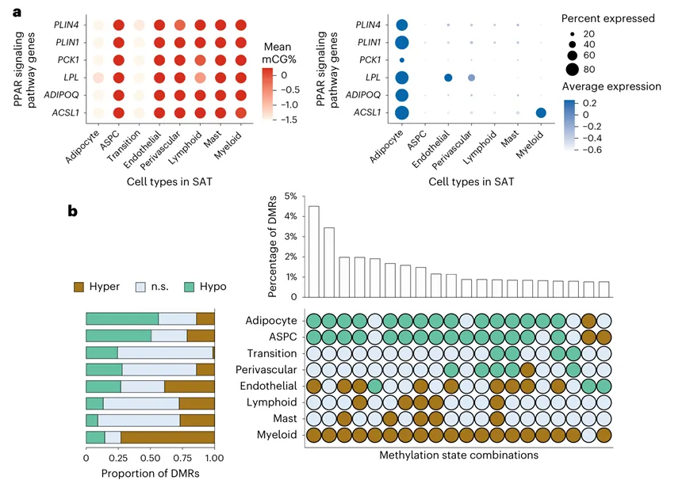
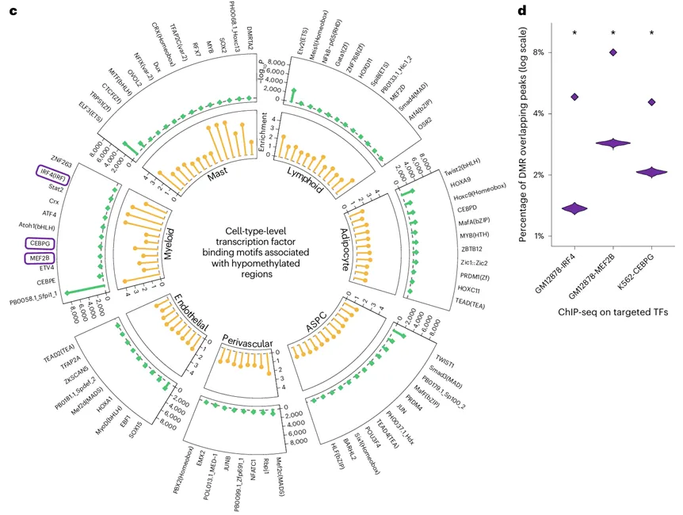
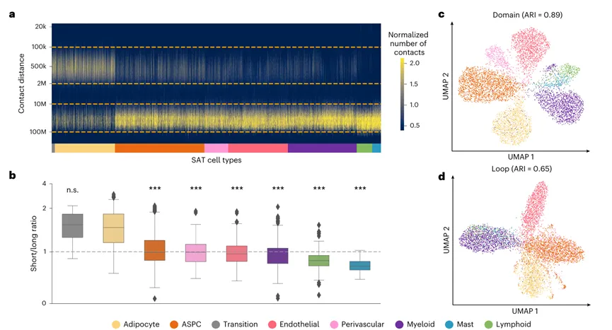
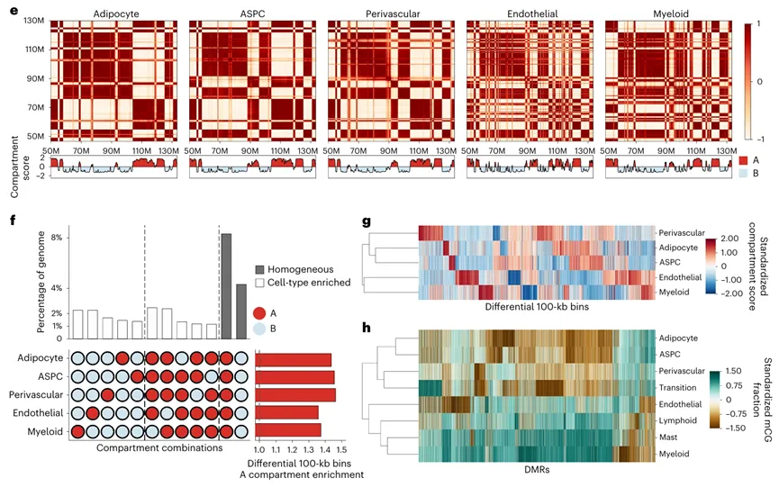
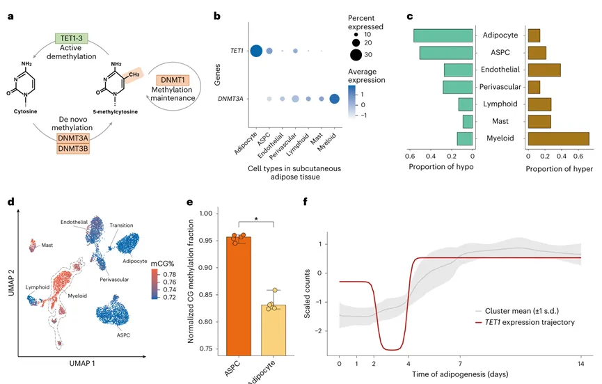
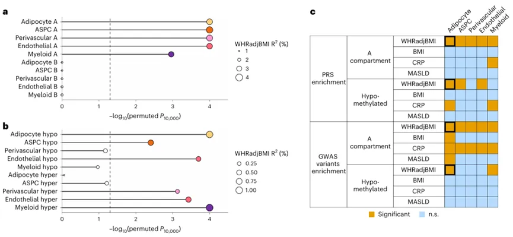

单细胞甲基化图谱还能发《Nature》：人类皮下脂肪组织的单细胞DNA甲基化图谱及三维基因组图谱恶性细胞群落
原文：https://mp.weixin.qq.com/s?__biz=MzAwMzIzOTk5OQ==&mid=2247538390&idx=1&sn=4d9ec5056465e1c3d9fe072f100a6985&chksm=9b3c2f86ac4ba6905fa9f3e1f43f75c7fe4bdd87434167229e6cd7fdb7f44badc09a40002899#rd 合集：文献速递
一、写在前面
本次汇报的是一篇《Nature》文章：《Single-cell DNA methylome and 3D genome atlas of human subcutaneous adipose tissue》。中文名称：人类皮下脂肪组织的单细胞 DNA 甲基化图谱及三维基因组图谱。
文章链接：https://www.nature.com/articles/s41588-025-02300-4
腹部肥胖作为全球公共卫生领域的重大挑战，其特征在于腹部区域脂肪组织的病理性过度堆积。流行病学数据显示，过去数十年间其患病率呈指数型增长。这一风险主要归因于其诱发心脏代谢性疾病（CMD）及其他系统性病理改变的高危性。目前普遍认为，肥胖诱导的组织与细胞层面的慢性炎症，可能是其主要的致病机制。
单细胞核甲基化-3C 测序（snm3C-seq）已成为一种在细胞分辨率下研究 DNA 甲基化和染色质构象的创新方法。近期的研究鉴定出了人类多种复杂组织（如卵母细胞、前额叶）等细胞类型层面的表观基因组特征。采用类似的方法，先前的研究也全面评估了小鼠脑细胞类型的表观基因组。然而，人类 SAT脂肪细胞类型层面的表观基因组特征却鲜有研究。这篇文章中，作者主要展示了 SAT 中细胞层面的 DNA 甲基化、染色质构象和基因表达特征，评估了甲基化相关基因在 SAT 细胞中的动态模式，鉴定了与细胞低甲基化区域相关的转录因子（TF）结合基序，并研究了 SAT 细胞表观基因组位点中的遗传变异对腹部肥胖及其相关炎症标志物（血液 C 反应蛋白，CRP）的影响。

新课程，赴新程
2026，生信基地迎来新教程：单细胞甲基化课程！免费编程课+实操直播课（2026年6月8日、6月10日、6月12日）三天手把手全程教学，助你一站式学习单细胞DNA甲基化分析！配套课程专属免费西柚云服务器和镜像，助力大家轻松上手实操！
免费服务器和镜像：学习版服务器(4线程、32GB内存)，包含开箱即用的镜像：单细胞甲基化分析的环境、工具、全部数据。注册地址：https://biomamba.xiyoucloud.net/
编程课程：Linux、R语言、Python课程视频预热学习，课后练习题作为配套打卡，学习时间：6月1日-7日。
报名费用：免费！免费！免费！
直播课表及日程安排：

报名领取学习资料与服务器：
填写问卷后：https://v.wjx.cn/vm/O1mGNtE.aspx#
联系客服微信[Biomamba_zhushou]

活动时间：2026年6月1日-14日
直播时间：2026年6月8日、6月10日、6月12日
你需要准备：一台能打开浏览器、能上网的电脑
参与方式：Biomamba生信基地同名B站、视频号同步直播~
直播预约：
视频号
B站
直播课程资料下载： https://pan.baidu.com/s/178VMmt14Q04kaEFWDB7_VQ?pwd=1r2a
提取码：联系客服[Biomamba_zhushou]领取并添加学习群
二、主要内容
1、 人类皮下脂肪组织（SAT）细胞的多模态图谱分析

Figure1


Figure2
为了探究SAT细胞的表观基因组景观，作者对从芬兰女性 SAT 活检样本中分离出的细胞核进行了 DNA 甲基化、染色质构象和基因表达的综合分析（Fig.1a）。UMAP分析鉴定出了 7 种主要细胞类型，包括：脂肪细胞、脂肪干细胞与祖细胞（ASPCs）、血管周细胞、内皮细胞、髓系细胞、淋巴系细胞以及肥大细胞（Fig.2a）。作者结合DNA甲基化与染色质构象分析后发现了一类细胞在两种分析中注释并不相同，并将其命名为过渡型细胞（Fig.2b），之后，作者探究了 SAT 的 snm3C-seq 数据是否能与 SAT 的 snRNA-seq 数据进行整合，结果显示GO分析的 mCG 低甲基化与 RNA 表达之间存在强烈且一致的相关性（Fig.2c）。因此作者将两个数据整合（Fig.2d），并设置overlap score来评估细胞的整合效果（Fig.2e）。综上所述，作者发现使用 snm3C-seq 鉴定出的细胞类型表观基因组图谱，与从 snRNA-seq 转录组推导出的图谱表现出高度的一致性；但与此同时，它们也携带了各自模态特有的信息（Fig.2f）。
2、模态特异性与模态共享的分子机制


Figure3
每种模态揭示的高表达 SAT 细胞类型标记基因，可能阐明表观基因组调控是如何参与具体的生物学过程和通路的。针对mCG 和基因表达水平，作者在所有 SAT 细胞类型中分别鉴定出了模态特异性（即仅在一种模态中检测到）和模态共享（即在两种模态中均能检测到）的标记基因，并进一步进行了GO及KEGG分析。之后作者聚焦了PPAR 信号通路相关基因，发现了ACSL1、ADIPOQ、LPL、PCK1、PLIN1 和 PLIN4 这六个基因在脂肪细胞和过渡型细胞中呈现低甲基化状态，而在其余细胞类型中则呈现高甲基化状态（Fig.3a）。相应地，它们的转录组图谱显示，这些基因主要在脂肪细胞中表达，而在其他 SAT 细胞类型中表达量极低。除此之外，作者发现不同 SAT 细胞类型之间，低甲基化区域和高甲基化区域的数量及丰度在全基因组范围内存在显著差异（Fig.3b）。表明髓系细胞中广泛存在的调控活性抑制，通常与脂肪细胞和 ASPCs 中增强的调控活性密切相关。
3、SAT脂肪细胞中基因的相互作用


Figure4细胞核内 DNA 的紧密包装导致了基因组区域之间发生物理接触，从而影响基因的表达机制。作者观察到，在通过 snm3C-seq 分析的细胞中，不同基因组距离下的近距离和远距离相互作用接触的分布存在显著差异。在与其他细胞类型的成对比较中，除了过渡型细胞外，脂肪细胞中短程相互作用（100 kb 至 2 Mb）的比例显著高于长程相互作用（10 Mb 至 100 Mb）（Fig.4a-b）。这一观察结果与所有利用不同分辨率染色质构象信息进行的细胞水平聚类分析相一致，这些分析表明过渡型细胞与脂肪细胞具有更高的相似性（Fig.4c-d）。
染色质区室（Chromatin compartments）能够连接相距数千万碱基对的基因组片段，反映了细胞在最高层级上如何将其染色体结构在三维空间中进行排布。之后，作者进一步进行了分析，结果显示在 6 号染色体和 12 号染色体上（Fig.4e-f），内皮细胞和髓系细胞拥有更复杂的结构，表现为频繁的区室转换。且作者将基因组划分为具有活性的 A 区室区域或抑制性更强的 B 区室区域之后发现A和B分别存在显著的异质性。同时层次聚类分析一致地将内皮细胞和髓系细胞（以显著的低甲基化和频繁的区室转换为特征）归为两个模态中的一个独立分支（Fig.4g-h），这与先前一项表明髓系祖细胞也能产生血管内皮细胞的报告相吻合。
综上所述，作者发现无论是看“DNA甲基化”还是看“三维空间结构”，内皮细胞和髓系细胞都紧紧抱团。这从表观遗传和三维基因组两个维度，共同印证了它们之间紧密的发育亲缘关系。
4、DNMT3A 和 TET1 作用于 DMR 模式

Figure5DNA 甲基化涉及甲基基团的添加及去除，这一过程由 DNA 甲基转移酶（如 DNA 甲基转移酶 3α，DNMT3A 和 DNA 甲基转移酶 3β，DNMT3B）催化完成。相反，DNA 去甲基化则涉及通过 ten-eleven translocation (TET) 家族蛋白（具体为 TET1、TET2 和 TET3）从 DNA 上移除该甲基基团（Fig.5a-b）。这进一步表明，这些转录因子很可能是驱动GBM中单核细胞向TAM5-GPNMB转化的关键转录调控因子。其中，TET1 在脂肪细胞中呈优先表达，这与作者之前的观察结果一致——即脂肪细胞中低甲基化区域（56.3%）显著多于高甲基化区域（Fig.5c-d）。且作者发现在人类原代前脂肪细胞分化过程中，TET1 与已知的脂肪生成基因存在时间上的共表达（Fig.5e-f）。综上所述，作者发现 SAT 中基因表达模式变化与DNMT3A 在髓系细胞中以及 TET1 在脂肪细胞中的细胞中的表达密切相关。
5、DMR 和染色质区室中的变异富集了 CMD 风险

Figure6接下来，作者关注了细胞水平区室和 DMR 中的遗传变异对与SAT 相关的心血管代谢疾病的影响，使用经体重指数调整后的腰臀比 WHRadjBMI 作为腹部肥胖的指标，结果显示A 区室（活性区室）中的 WHRadjBMI均显著（P < 0.05）且为富集预测因子（Fig.6a-b）。此外，作者发现由髓系细胞的 A 区室和低甲基化区域构建的 PRS 是 CRP 的富集预测因子，这表明该免疫细胞类型在低度炎症中发挥作用（Fig.6c）。总体而言，作者的结果凸显了 SAT 细胞类型水平的甲基化和空间构象图谱是心血管代谢疾病（CMD）遗传风险的重要潜在背景，其中脂肪细胞的低甲基化区域和活性A区室对腹部肥胖风险的信号最强，而髓系细胞的A区室则更能提示炎症风险 。
三、总结与讨论
该研究通过解析人类皮下脂肪组织（SAT） 中不同细胞类型的表观基因组景观，揭示了脂肪细胞与髓系细胞之间存在高度动态的相互作用 。研究团队不仅绘制了细胞类型特异性的甲基化图谱和三维基因组结构 ，还发现TET1和DNMT3A基因在不同细胞类型中表现出互斥协调，即TET1在脂肪细胞中高表达并与低甲基化相关，而DNMT3A在髓系细胞中高表达并与高甲基化相关。
研究进一步将表观遗传数据与英国生物样本库（UKB） 的遗传变异数据整合，发现位于脂肪细胞低甲基化区域和活性A区室中的全基因组关联研究（GWAS）变异位点 ，与腹部肥胖风险显著相关。这表明细胞类型特异性的表观基因组特征在心血管代谢疾病（CMDs）的遗传易感性中起着关键作用。尽管研究受限于样本量、人群单一性以及仅分析了顺式染色质相互作用，但其提供的高分辨率表观遗传图谱为未来探索脂肪组织异质性、精准解析肥胖遗传机制及开发细胞类型特异性生物标志物奠定了重要基础。

如何联系我们

 留一个领取资料、开箱即用的单细胞分析镜像的微信号[Biomamba_zhushou]，方便各位随时交流。同时我们也构建了交流群矩阵，欢迎大家入群讨论。
大家可以阅读完这几篇之后添加给生信入门初学者的小贴士没有检索，就没有发言权
留一个领取资料、开箱即用的单细胞分析镜像的微信号[Biomamba_zhushou]，方便各位随时交流。同时我们也构建了交流群矩阵，欢迎大家入群讨论。
大家可以阅读完这几篇之后添加给生信入门初学者的小贴士没有检索，就没有发言权
已有生信基地联系方式的同学无需重复添加

 您点的每个赞和在看，我都认真当成了喜欢
您点的每个赞和在看，我都认真当成了喜欢